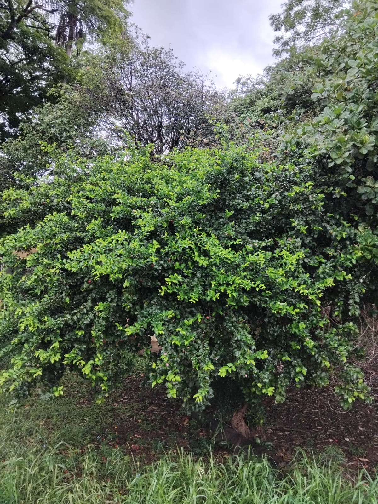
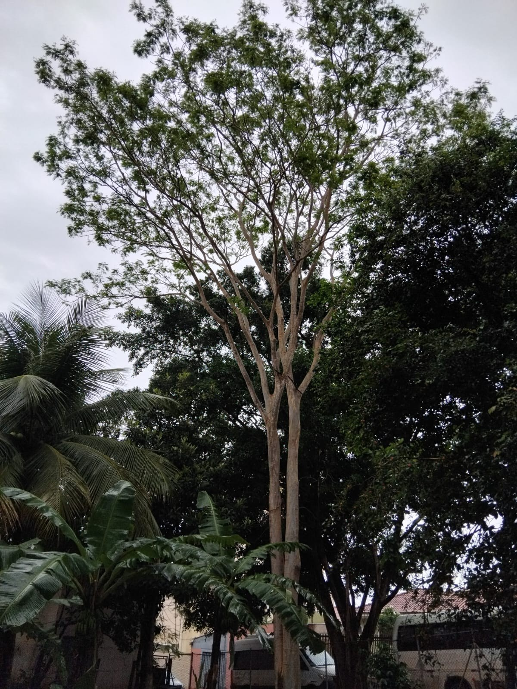
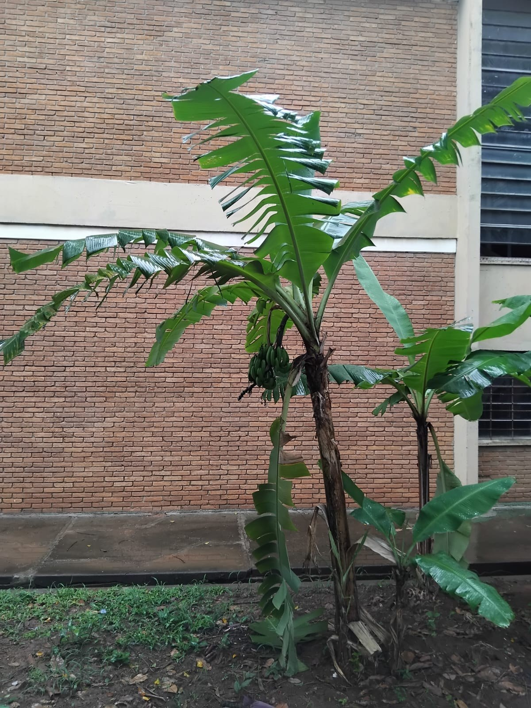
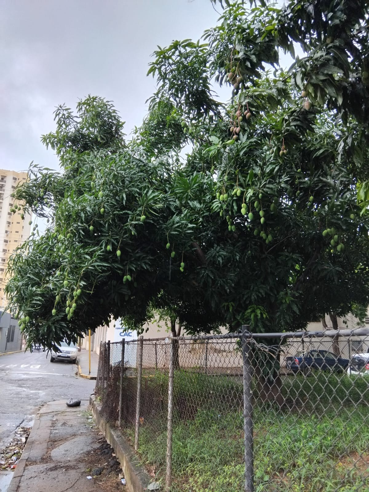

Tecnologia que Cultiva o Futuro
Conheça as árvores da nossa escola e descubra como a tecnologia pode ajudar a valorizar e preservar o meio ambiente.
Árvores da nossa escola
Conheça algumas das espécies encontradas em nossa escola e descubra mais sobre cada uma delas.



Identifique uma árvore
Aponte a câmera do seu celular para o QR Code presente próximo à árvore e acesse informações sobre sua espécie, características e importância.
Informações sobre a árvore
Acesso rápido e prático
Mais precisão nas informações
COMO FUNCIONA
É simples e rápido
Em poucos passos você descobre mais sobre as árvores presentes em nossa escola.
01
Encontre a árvore
Localize uma das árvores catalogadas em nossa escola.
02
Escaneie o QR Code
Use a câmera do seu celular para acessar as informações.
03
Descubra mais
Veja características, curiosidades e a importância da espécie.
Faça parte do Raiz Digital
Cadastre-se para acompanhar as árvores catalogadas, salvar suas espécies favoritas e ficar por dentro das novidades do projeto.
Cadastrar agora →